Jorge Luis specimen
Reference prototype for Jorge Luis's three gestures. Each plays once, from neutral to its main pose at 50% and back, with the shared standard easing. With reduced motion, the main pose appears without movement for the gesture's duration. Add #dark to the address for the dark theme.
Representations
Key poses
